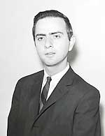
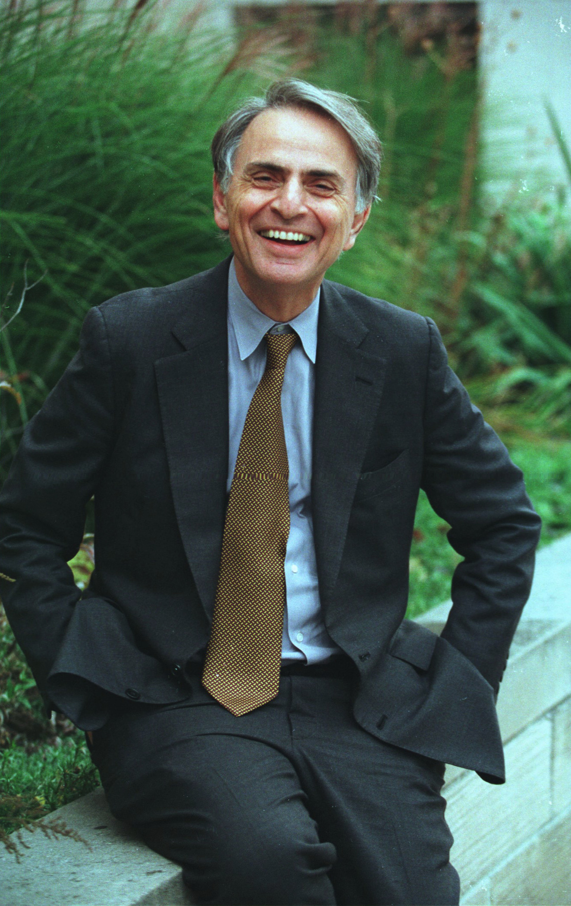

Tous les livres du monde ne contiennent pas plus d'information qu'il n'en est diffusé en video dans
une seule grande ville américaine en une seule année. Tous les bits n'ont pas la même valeur.
Sagan naît le dans le quartier de Brooklin à New
York. À partir de il entre à la faculté de Rahway (New Jersey).
Sagan 1961, UPI/Corbis-Bettmann

À partir de il entre à l'Université de Chicago, où il va commencer à s'intéresser aux origines de
la vie. Il y obtient une licence () puis une maîtrise () en Physique. D'après Leonard Reiffel, c'est après cette époque, en , que Sagan est contacté pour
participer au projet A119, avant d'obtenir son doctorat en astronomie en
. Il rentre ensuite à l'Université de Berkeley et enseigne en tant que professeur auxiliaire à
l'Université de Harvard.
Son premier article dans grand journal scientifique paraît en , dans le magazine Science.
Il s'intitule La Planète Vénus et va lui
permettre de poser tôt son empreinte dans le monde scientifique. Son travail aide à déterminer que la surface de Vénus — un moment considérée comme un lieu peut-être
habitable — est extrêment chaude, brûlée par un effet de serre considérable. Début novembre il participe fait ses
premiers pas dans la question SETI, en participant à la fameuse réunion de
"l'Ordre du Dauphin" organisée par Frank Drake et Pearman au NRAO.
De fil en aiguille, Sagan est rapidement engagé dans un débat concernant la sonde Mariner 2, qui doit aller
inspecter Vénus. Une des questions cruciales est de
savoir si la sonde doit emporter une caméra. Sagan fait partie du camp minoritaire des "explorateurs", qui pense que
l'on pourrait observer quelque chose au travers de quelques rares trous dans la couche nuageuse de Vénus. De la même manière il suggérera que des
extraterrestres auraient pu visiter notre système solaire, faire une escale sur la Lune, et y laisser des artefacts
observables par des caméras. En il rentre à Cambridge où il est astrophysicien à l'Observatoire
d'Astrophysique Smithsonian. Lors d'une conférence cette année-là, il défendit encore une fois l'idée d'installer des
caméras sur les sondes en route pour Mars, en partie parce qu'elles pourraient observer de nombreux artefacts de
formes de vie avancées. Cependant, les responsables du JPL décident que Mariner 2 inspectera Vénus sans caméras, mais équipée du radiomètre
infrarouge sur lequel a travaillé Sagan.
Interview de Sagan avec Thornton Page en 1966 sur la vie extraterrestre et
les témoignages d'ovnis
En il co-écrit sur la vie intelligente dans l'univers Sagan C. E. & I. S. Shkolovskii: Intelligent
Life in the Universe, 1966. En , il publie dans le National
Geographic un article intitulé Mars, un monde nouveau à explorer.
Cornell et symposiums
En il quitte son poste à Cambridge pour l'Université de Cornell à Ithaca (New York). Là, il
rencontre Drake, devient directeur du Laboratoire pour l'Etude des Planètes et fonde le nouveau domaine de recherche
de l'exobiologie — l'étude des formes de vie et des biochimies extraterrestres possibles. Cette année-là il fait une
déclaration au symposium sur les ovnis organisé à la Chambre des Représentants U.S Déclaration
au symposium sur les ovnis devant la Chambre des Représentants U.S., 1968.
Cette même année, avec Philip Morrison, Walter Orr Roberts (University Corporation pour
la Recherche Atmosphérique à Boulder, Colorado) et surtout Page, Sagan approche l'AAAS pour que l'association organise un symposium sur les ovnis, à l'occasion
d'une conférence de l'AAAS prévue en décembre.
Cependant, en attente de la parution du Rapport Condon et en
raison de l'opposition de certains scientifiques à traiter le sujet des ovnis. Au sujet de cette opposition Sagan
écrit, peu avant la tenue du symposium (134ᵉ conférence de l'AAAS) l'année
suivante :
L'opposition à la tenue de ce symposium, présentée en partie par certains scientifiques très distingués, est
basée sur la vision que si un sujet aussi non-scientifique que la controverse ovni est discuté, nous pourrions
tout aussi bien organiser des symposia sur l'astrologie, les idées d'Immanuel Velikovsky, et ainsi de suite. Nous pensons que cette conclusion est
substantiellement correcte, mais ce n'est pas le reductio ad absurbum que ses auteurs semblent croire
qu'il est.
Tous ceux d'entre nous qui enseignent dans des collèges et des universités sont conscients d'une dérive tendant à
s'éloigner de la science. (...)
Mais alors que nous pouvons déplorer cette tendance, en particulier dans sa variante extrême de culte religieux,
il ne nous semble pas profitable de l'ignorer. Parler de "lui donner de l'importance en en discutant" est mal
comprendre ces attitudes. Ils reçoivent déjà de la considération dans le sens où bénéficient d'une large
couverture des journaux et des magazines qui touche bien plus d'Américains, scientifiques comme profanes, que, par
exemple, les journaux scientifiques qui évitent généralement une telle discussion.
Il y a des choses que l'on peut attendre de symposia scientifiques sur de tels sujets et d'autres choses que l'on
ne peut attendre. Nous ne convertirons pas les vrais croyants, quelle que soit la force de nos arguments. Une
secte religieuse prédit de manière confidentielle que le monde finirait en 1914. Comme la fin du monde n'était
apparemment pas arrivée, on aurait pu s'attendre à ce que les membres de cette secte soit proche de 0. Ce n'est
pas le cas ; le nombre de ses membres s'est régulièrement accru depuis 1914. (...)
La science est elle-même devenue une sorte de religion, et de nombreuses déclarations engoncées dans le vocable
scientifique sont docilement acceptées par la plupart du public. Nous pensons que des organisations comme l'AAAS ont une obligation majeure d'arranger des confrontations sur
précisément ces sujets liés à la science qui attirent l'œil du public. Auparavant de telles confrontations ont
bien servi la science (...). Lettre de Sagan adressée aux participants au symposium, au comité de l'AAAS et à d'autres parties le 29 septembre .
Le symposium se tient finalement les à Boston (Massachusetts),
où l'AAAS refuse de cautionner le Rapport Condon. On en retiendra notamment ces déclarations de
Sagan :
Il y a une large gamme de concepts qui seraient particulièrement fascinants si seulement ils étaient vrais. Mais
précisément parce que ces idées ont du charme, exactement parce qu'elle sont d'une significativité émotionnelle
pour nous, ce sont les idées que nous devons examiner de la manière la plus critique.
(...) Il y a 2 sortes d'auto-tromperie possible ici : soit accepter l'idée d'une visite extraterrestre face à des
preuves très minces parce que nous voulons que ce soit vrai ; ou rejeter une telle idée en bloc, en l'absence de
preuves suffisantes, parce que nous ne voulons pas qu'elle soit vraie. Chacun de ces extrêmes est une sérieuse
entrave à l'étude des ovnis Sagan, C. E. & Page, T.: UFO's - A Scientific Debate, 1972, Cornell University Press - Livre tiré des déclarations préparées lors du Symposium de l'AAAS les 26 et 27 décembre 1969 à Boston (Massachusetts), où Sagan développe le
chapitre consacré à l'HET et autres hypothèses. réédité chez Barles & Noble 1996, p. 265.
NASA
En il est nommé Professeur d'Astronomie et des Sciences de l'Espace David Duncan. La même année
avec Drake et Morrison, il rejoint des scientifiques soviétiques à la 1ère conférence internationale sur
la communication avec des intelligences extraterrestres, qui se tient à Byurakan en Arménie (URSS)Communication with Extraterrestrial Intelligence (MIT Press, Cambridge, MA, 1973) - Actes d'une conférence tenue à l'Observatoire Astrophysique Byurakan en 1971. Inclut des contributions de Shklovskii, qui était l'un des organisateurs..
En tant qu'ardent supporter de l'exploration spatiale, il commence à être consultant pour la mission Mariner
9 (1971) de la NASA, qui donne les premières images détaillées de Mars, montrant
alors un monde désolé et parsemé de cratères. Egalement avec Drake, il conçoit une plaque contenant un message de salut du peuple de la
Terre, que transportent les sondes Pioneer 10 (1971) et Pioneer 11 (1972), qui onta aujourd'hui
dépassé les limites du système solaire et poursuit sa route dans l'espace interstellaire.
Tout au long de sa carrière, Sagan insiste sur l'importance de rechercher les signes d'une vie extraterrestre,
posant cette question cruciale :
Sommes-nous un accident exceptionnellement rare ou l'univers déborde-t-il d'intelligence ? (C'est) une question
vitale pour nous comprendre nous-mêmes, nous et notre histoire.
Avec divers collaborateurs, dont Paul Horowitz de l'Université de Harvard, Sagan
collabore aux projets utilisant des radiotélescopes pour écouter les signaux provenant de possibles civilisations
extraterrestres. Il déclare un jour :
Découvrir que d'autres êtres partagent l'univers avec nous aurait une signification absolument phénoménale, ce
serait un événement marquant une nouvelle époque dans l'histoire humaine.
Les radio télescopes écoutant les signaux de la vie dans les milliards d'étoiles et de galaxies, partie du
programme chère au coeur de Sagan, n'a toujours pas reçu de réponse à ce jour. A ce propos, Sagan déclare :
Cela donne une indication de la rareté et de la préciosité de la vie sur cette planète. Le pendant de ne pas
trouver de vie sur d'autres planètes est d'apprécier la vie sur Terre.
En , comme pour la fondation Bosack-Kruger, il convainc Steven Allan Spielberg
de subventionner le projet META à
hauteur de {{100000 | currency | USD}}. Le projet débute à l'observatoire Oak Ridge à Harvard (Massachusetts).
The Cosmic Connection
Dans un chapitre de son 1er livre The Cosmic Connection : An Extraterrestrial
Perspective, Anchor Press, - Pour lequel il obtient le prix Campbell du meilleur ouvrage scientifique
de l'année, Sagan spécule sur la possibilité d'autres systèmes planétaires contenant des mondes supportant la
vie. Il inclut une illustration montrant 5 "modèles de systèmes solaires" créés à l'aide d'une simulation sur
ordinateur conçue par Stephen Dole, alors à Rand Corp.
Tout en dépensant énormément d'énergie à ses écrits et conférences publiques, il continue d'être un chercheur
actif. Il ne perd jamais son enthousiasme pour ses recherches sur la prédominance de la chimie organique ou pour sa
quête de signaux de civilisations extraterrestres. Peu importe que de tels signaux n'aient pas encore été
découverts; Sagan prend un grand plaisir à s'attaquer à des tâches et des concepts présents loin de la prise en
compte de la science. Dans cet esprit, les derniers chapitres de The Cosmic Connection contiennent ses
réflexions sur ce que des intelligences extraterrestres pourraient être et comment elles pourraient communiquer. Les
mots de Sagan sont à la fois inspirés et humbles :
Nous sommes comme les habitants d'une vallée isolée de Nouvelle-Guinée qui communiquent avec les sociétés des
vallées voisines à l'aide de messagers et des tambours. Si on leur demandait comment une société extrêmement
avancée pourrait communiquer, ils imagineraient des messagers extrêmement rapides ou un immense tambour
improbable. Ils n'imagineraient pas une technologie dépassant leur compétence. Et pourtant, durant tout ce temps,
un considérable traffic par câble et radio passe au-dessus d'eux, autour d'eux, et à travers eux...
Nous écouterons les tambours interstellaires, mais nous ne verrons pas les câbles interstellaires. Nous sommes
probablement capables de recevoir nos premiers messages des tambours des vallées galactiques voisines — provenant
de civilisations légèrement plus avancées. Les civilisations largement plus avancées que la nôtre seront, pour un
long moment, éloignées à la fois par la distance et par l'accessibilité. Dans une future époque de traffic radio
intense, les civilisations les plus avancées pourraient rester, pour nous, une légende vaporeuse.
Par la suite il collabore aussi aux modules et sondes Viking (), qui recherchent — sans
succès — des signes de vie à la surface de la planète rouge ; les sondes Voyager (1977) qui offrent les
premieres études des planètes extérieures et de leurs satellites ; et la sonde Galileo, qui renvoie des
images extrêmement détaillés de Jupiter et de ses
satellites géants. A propos de l'exploration spatiale, Sagan déclarera :
Nous avons examiné de près des douzaines de nouveaux mondes. Des mondes que nous n'avions jamais vu auparavant.
Et à moins que nous soyons assez stupides pour nous détruire nous-mêmes, nous allons nous déplacer dans l'espace
au siècle prochain. Et je suis assez chanceux pour avoir joué un rôle dans la première reconnaissance préliminaire
du système solaire, c'est une chose terriblement excitante.
Nous avons parcouru l'ensemble des planètes du système solaire, de Mercure à Pluton,
au cours d'une période historique de 20 (à) 30 ans d'exploration par vaisseaux spatiaux.
Sagan montrera également que l'univers regorge de composés chimiques basés sur le carbone qui pourraient être les
précurseurs d'autres formes vivantes. Sagan constitue aussi des preuves que Titan le satellite de Saturne possède
une atmosphère contenant des molécules organiques similaires aux briques élémentaires de la vie. Ce travail sera
confirmé avec fracas par les sondes Voyager 1 et 2 dans les années 1980s.
Le début du succès
A côté de ses recherches, Sagan a également hébergé sur série télévisée populaire sur PBS intitulée CosmosCosmos, 1980. Il a publié des centaines d'articles scientifiques; écrit 8
livres ; et fut professeur d'astronomie à l'Université de Cornell University à Ithaca (New York).
En il quitte Ithaca pour Pasadena et co-fonde là-bas le CSICOP.
En il publie The Dragons of Eden, une réflexion sur l'évolution possible de
l'intelligence humaine. Au printemps il revient à Ithaca et est contacté par la NASA qui
lui demande de former un comité chargé de définir le contenu d'un enregistrement phonographique qui serait placé
dans les sondes Voyager 1 et 2. Les sondes contiendront en plus de l'enregistrement phonographique (prévu
pour perdurer un millard d'années), les salutations d'humains en 60 langues différentes ainsi que des sons de
cétacés, un traité de l'évolution audio, 116 images de la vie sur Terre et 90 mn de musique d'une grande diversité
de cultures (il collaborera aussi à Pionner). La même année il crée Carl Sagan Productions: Science for the Media, Inc. dans le but
d'améliorer le traitement de la science à la télévision et au cinéma.
En il reçoit le prix Pulitzer pour un de ses livres Sagan, C. E.: The
dragons of Eden : speculations on the evolution of human intelligence, Random House, 1977 et quitte
Ithaca pour Los Angeles, où il entame son 1er projet de série télévisée en 13 numéros sur l'astronomie qui sortira
en sous le titre Cosmos. Peu avant en il est co-fondateur de la Société Planétaire aux côtés de Bruce Murray et Louis Friedman.
Cosmos
En effet le plus grand talent de Sagan est peut-être sa capacité à communiquer avec des personnes ici sur Terre. Au
travers d'une série de livres, d'articles de magazines et d'émissions de télévisions, il dépasse la communauté
scientifique pour transmettre l'excitation de ses recherches au grand public.
Les intérêts de Sagan vont loin et sont larges, depuis les effets de la guerre nucléaire jusqu'à l'évolution de la
pensée vers l'érosion intellectuelle apportée par la pseudoscience (le sujet de
son dernier ouvrage Sagan, C. E.: The demon-Haunted world: Science as a candle in the
dark, Random House, 1997). Sa série télévisée Cosmos touche une audience de 500 millions de
personnes; sa nouvelle ContactContact, 1985 est adaptée en film.
Dans l'immensité du cosmos, il doit y avoir d'autres civilisations, beaucoup plus âgées et beaucoup plus avancées
que la nôtre. Alors, ne devrions-nous pas avoir été visités ? Ne devrait-il pas y avoir à tout moment des
vaisseaux étranges dans les cieux de la Terre ?
Il n'y a là rien d'impossible et nul ne serait plus heureux que moi si nous étions visités. Mais est-ce que ça
s'est vraiment produit ? Ce qui compte, ce n'est pas ce qui semble plausible, pas plus que ce en quoi nous
aimerions croire, pas plus que ce qu'un ou deux témoins proclament, mais seulement ce qui est soutenu par des
preuves solides, examinées avec rigueur et scepticisme.
Des affirmations extraordinaires nécessitent des preuves extraordinairesCosmos, épisode 12 : Encyclopaedia
Galactica.
En il retourne à Ithaca.
Il est également rédacteur-en-chef de ICARUS: International Journal of Solar System Studies et membre du
Comité Editorial de Cosmic Search.
Sagan était également un adepte de la marijuana et son ancienne femme, Ann Druyan, dirige l'Organisation Nationale
pour la Réforme des Lois sur la Marijuana CNN 22/08/1999.
Il co-fonde le Council for Secular Humanism, une organisation
américaine à but non lucratif visant à aider les gens à vivre le mieux possible au travers de la seule raison et sans
tomber dans une croyance en un dieu ou une autre supériorité surnaturelle quelconque.
La maladie
Sagan

En on lui diagnostique une maladie du sang. Le Centre de Recherche sur le Cancer Fred Hutchinson
identifie sa maladie comme une myelodsplasie, une forme d'anémie également connue sous le nom de syndrome de
preleukémie. En il quitte Ithaca pour Seattle et après avoir approché
la mort de près par 2 fois, le centre lui fait en avril une greffe de moelle osseuse de sa sœur, puis une
chimiothérapie, qui permettent une rémission. À une conférence, parlant de cet épisode, il déclare J'aimerai
commencer avec une remarque personnelle. J'ai été à Seattle ces derniers mois, luttant contre une maladie menaçant
la vie qu'il semble que j'aie surmontée. Sagan reste affaibli, mais malgré la maladie, il poursuit son rêve
d'aller vers les étoiles : Le tâche est loin d'être achevé, déclare-t-il. Nous rechercherons la limite
entre le système solaire et le médium interstellaire puis nous voyagerons infiniment dans le noir entre les
étoiles. C'est d'ailleurs à partir de la fin de l'année que l'on découvre des planètes autour d'étoiles
semblables au Soleil, qui nous offre un premier exemple de ce à quoi d'autres systèmes planétaires pourraient
ressembler. L'existence de ces systèmes confirme alors l'opinion de Sagan selon laquelle les planètes sont communes
dans notre galaxie.
Le , son corps affaibli ne résiste pas à une pneumonie.
Sagan, C. E.: Other Worlds, New York: Bantam Books, 1975Sagan, C. E.: Murmurs
of Earth : the voyager interstellar record (avec Frank Drake, Ann Druyan, Timothy Ferrys, Jon Lomberg et Linda Salzman Sagan)Sagan, C. E.: Mars
and the mind of man avec Ray Bradbury, Arthur C. Clarke, Bruce
Murray et Walter SullivanSagan, C. E.: Broca's brain : reflections on the romance of
science, 1979Sagan, C. E. & Druyan, Ann: Comet, 1985Sagan, C. E. & Turco, Richard: A path where no man thought, 1990 - Hiver nucléaire et le fin de la course à l'armementSagan, C. E. & Druyan, Ann: Shadows of Forgotten Ancestors (1992): A Search for Who We AreSagan, C. E.: Pale blue
dot: A Vision of the Human Future in Space, 1995Sagan, C. E.: Billions &
billions (1997) : Thoughts on life and death at the brink
of the millennium (postume, publié par Ann Druyan)